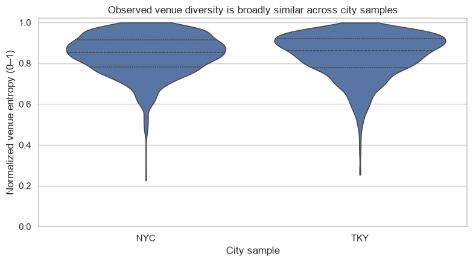
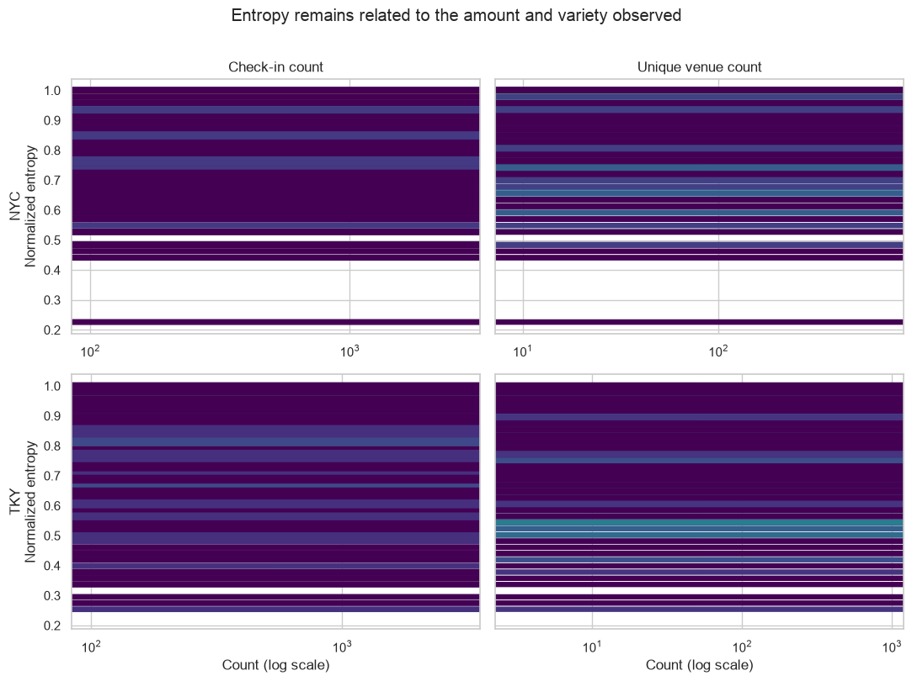

By the end, you should be able to give the main result and its most important limitation in 30 seconds.
068 minutes output → claim
0.853NYC median normalized venue H
0.860Tokyo median normalized venue H
≈ overlapthe honest comparative headline

Figure 1. NYC IQR 0.781–0.915; Tokyo IQR 0.780–0.920. The distributions overlap much more than their medians differ.
Why median and IQR?
User activity and repertoire counts are skewed. Median locates a typical user robustly; IQR shows the middle half. A mean-only ranking would hide shape and encourage overinterpretation of a 0.007 median difference.
Raw entropy and unique venues are slightly higher in Tokyo: median raw H 5.487 versus 5.348 bits and median unique venues 80 versus 76. Report raw and normalized results together because they answer different questions.
“Typical normalized venue entropy is very similar in the two samples—0.853 NYC and 0.860 Tokyo—with heavily overlapping IQRs. The more important finding is substantial variation within each city, not a city ranking.”
Activity still matters
Normalization controls the theoretical maximum for observed K; it does not erase the observation process. Rank correlations between check-in count and normalized entropy are −0.296 NYC and −0.408 Tokyo. Correlations with unique venues are +0.499 and +0.343.

Figure 2. Hexagonal bins reduce overplotting; log x-axes handle skew. These are descriptive user summaries, not causal regressions.
Why “Spearman-like”?
The notebook ranks each variable and computes Pearson correlation of those ranks, equivalent to the usual Spearman construction with average tie ranks. Rank association is appropriate because relationships are skewed and not assumed linear. Correlation still does not establish mechanism or causation.
A structural caution: entropy, event count, and unique venues are not independent constructs. Finite sampling and the metric definition create relationships. The analysis uses correlation as a diagnostic reminder, not an explanatory model.
Retrieve
What is the headline city comparison?
Typical normalized venue entropy is very similar and the distributions overlap strongly; within-city heterogeneity matters more than the 0.007 median difference.
Why doesn't normalization solve activity bias?
It rescales by the maximum for observed K but cannot recover unobserved venues or correct voluntary reporting and finite-sample behavior.
Practice: explain the result in 30 seconds without calling either city more exploratory. Ask the teaching agent to challenge any claim that feels too strong.